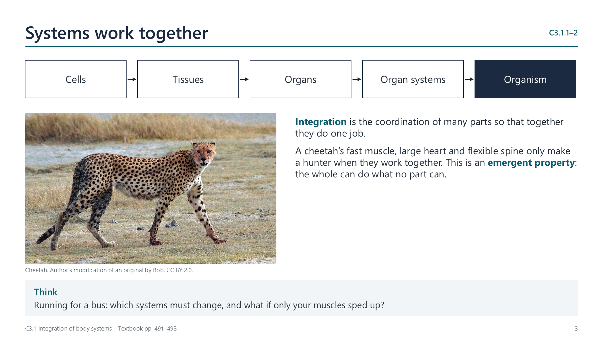
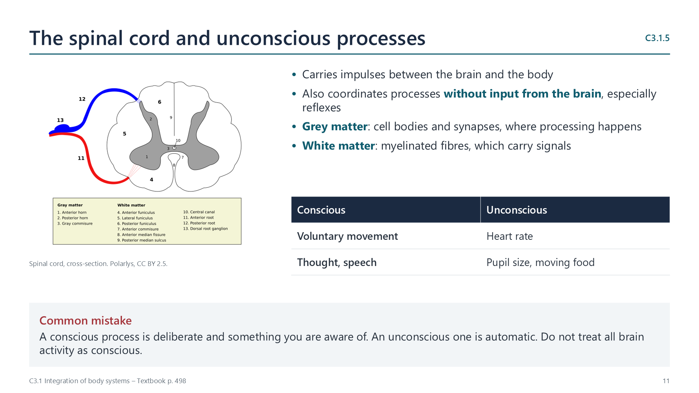
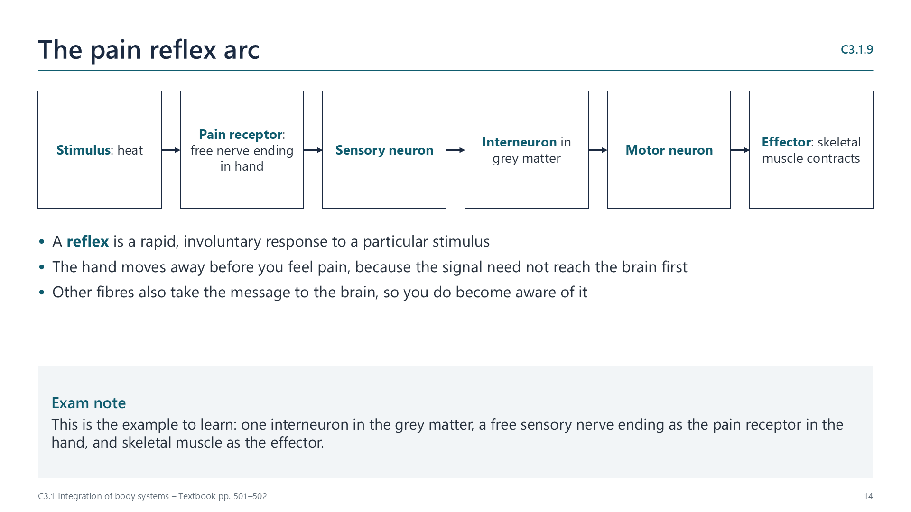
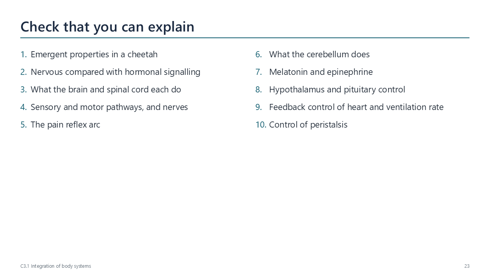
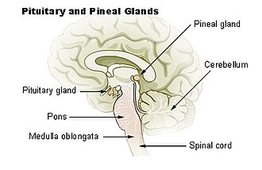
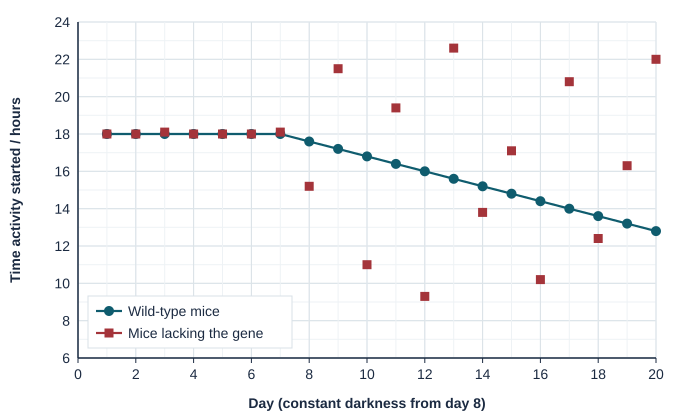

Written for this site from the course textbook and class slides. Use the page numbers to read the book's fuller account. Image credits are on slide 31.
Integration is the coordination of the parts of a system, so that together they perform an overall function. It is necessary at every level of life, because the parts would otherwise work against one another.
C3.1.2
The hierarchy from cells to systems
pp. 491–493
Cells form tissues, tissues form organs, organs form organ systems, and organ systems form the organism. New properties appear at each level. These emergent properties arise from interaction, and the parts alone do not have them.
A cheetah is an effective predator only because its muscles, spine, heart and lungs work together.

C3.1.3
How hormones, nerves and transport link organs
pp. 493–495
Nervous
Hormonal
Signal
Electrical impulses and neurotransmitters
Chemical messengers
Travels by
Neurons and nerves
Bloodstream
Destination
Specific muscles or glands
Target cells around the body
Speed and duration
Very rapid, short-lived
Can be slow, long-lasting
The blood system also integrates organs by moving materials. Glucose goes from the gut and liver to respiring cells, oxygen from the lungs to all cells, and urea from the liver to the kidneys.
The nervous system
C3.1.4
The brain as the main centre for integrating information
p. 496
The brain receives impulses from sensory receptors, combines and processes information from several inputs at once, and sends impulses to effectors. It also stores information, in learning and memory.
C3.1.5
What the spinal cord coordinates without conscious thought
p. 498
The spinal cord carries impulses between the brain and the body. It also coordinates unconscious processes, which are automatic, such as reflexes. Conscious processes, such as voluntary movement and speech, are deliberate. Its grey matter contains cell bodies and synapses, and its white matter contains myelinated fibres.
C3.1.6
How sensory neurons carry input
pp. 498–499
Sensory neurons carry messages from receptor cells to the central nervous system: to the spinal cord and on to the cerebral hemispheres.
C3.1.7
How motor neurons carry output
p. 499
Motor neurons carry impulses from the cerebral hemispheres, through the spinal cord, to muscles, which are stimulated to contract.
C3.1.8
Nerves: bundles of sensory and motor fibres
p. 500
A nerve is a bundle of nerve fibres from both sensory and motor neurons, inside a protective sheath. A transverse section shows both myelinated and unmyelinated fibres.
Watch out: a neuron is one cell, and a nerve contains fibres from many neurons.

C3.1.9
The pain reflex arc
pp. 501–502

A reflex is a rapid, involuntary response. A free nerve ending in the hand, acting as a pain receptor, starts an impulse in a sensory neuron. This passes to one interneuron in the grey matter of the spinal cord, then to a motor neuron, and then to skeletal muscle, which is the effector.
C3.1.10
How the cerebellum coordinates movement and balance
p. 502
The cerebellum, in the hindbrain, coordinates skeletal muscle contraction and balance. It uses input from receptors to adjust commands to motor neurons. It refines movements, but does not start them.
Hormones
C3.1.11
How melatonin adjusts sleep
pp. 502–503
The pineal gland secretes melatonin, more in darkness and less in light. High levels promote sleep, and falling levels prepare the body to wake. This helps set the 24-hour circadian rhythm. Jet lag happens because the rhythm takes days to adjust.
C3.1.12
How epinephrine readies the body for activity
pp. 503–504
The adrenal glands secrete epinephrine (adrenaline) when the body is under stress. Heart rate and breathing rate rise, and liver glycogen is broken down, so more oxygen and glucose reach muscles. Aerobic respiration then supplies more ATP for intense contraction.
C3.1.13
How the hypothalamus and pituitary direct the glands
pp. 504–505
The hypothalamus links the nervous and endocrine systems. It monitors the blood, and it controls the pituitary gland using hormones and nerve impulses. Pituitary hormones then control growth, development, reproduction and homeostasis.
Feedback
C3.1.14
Feedback control of heart rate
pp. 506–507
Baroreceptors in the aorta, carotid arteries and right atrium monitor blood pressure. Chemoreceptors in the carotid arteries, aorta and brain monitor blood pH and levels of oxygen and carbon dioxide. The medulla coordinates the response.
Detected
Nerve to the sinoatrial node
Result
Low pressure, low pH or low oxygen
Sympathetic
Heart rate rises
High pressure, or low carbon dioxide
Vagus (parasympathetic)
Heart rate falls
C3.1.15
Feedback control of ventilation rate
pp. 507–508
During exercise, respiration produces more carbon dioxide, which forms an acid in the blood, so pH falls. Chemoreceptors detect this and signal to the brainstem. Impulses go to the diaphragm and intercostal muscles, so breathing is faster and deeper, and carbon dioxide is removed.
Watch out: the main stimulus is a rise in carbon dioxide, detected as a fall in pH, and not usually a lack of oxygen.

C3.1.16
How the central and enteric nervous systems control peristalsis
pp. 508–509
Peristalsis is waves of muscle contraction along the gut. Swallowing and egestion are voluntary, under the central nervous system. Between these two points, movement is involuntary and is coordinated by the enteric nervous system in the gut wall.
Videos
Select a video to play it here. Select it again to close it.
Print this guide and complete it as you work through the slides and videos. It asks for your own explanations, so close the notes while you try each section.
A printable worksheet on the statements, from quick recall to data questions and longer answers. It has 55 marks and takes about 55 minutes, or you can do one section at a time.
Questions built on realistic experimental data, in the style of Paper 1B and Paper 2. Work them on paper and show your working. 8 marks in total. Your teacher has the mark scheme.
Body clocks in mice
8 marks

Photo: Author not stated, Public domain, Wikimedia Commons.
Mice were kept with 12 hours of light and 12 hours of dark (lights off at 18:00) for 7 days, then in constant darkness for 13 days. The time each mouse started running on its wheel was recorded every day. Normal (wild-type) mice were compared with mice lacking a gene for a clock protein.

State when both groups of mice became active during the first 7 days. [1]
Suggest one advantage to mice of being active at night. [1]
Calculate the length of one daily cycle (the period) of the wild-type mice in constant darkness. Show your working. [2]
Compare the two groups in constant darkness. [2]
Evaluate the hypothesis that this gene is needed for the body clock. [2]
Practical
Heart and breathing rate during exercise
Lab35 minC3.1.14, C3.1.15
You will need: Stopwatch, step or chair
Count resting heart rate and breaths per minute
Do three minutes of gentle stepping
Count both rates immediately and every minute during recovery
Explain the changes using chemoreceptors, baroreceptors and feedback
Safety: Volunteers only. Anyone with a heart or breathing condition should act as recorder. Stop if unwell.
Carry this out with your teacher's supervision and follow your school's lab rules.
Nature of science and TOK
Nature of science
Experiments
In 1902 Bayliss and Starling showed that a chemical, secretin, could trigger pancreatic secretion with nerves cut, revealing control by hormones.
Theory of knowledge
Can a whole system be understood by studying its parts?
Biologists often isolate one organ or signal. Consider what integration between systems might be missed when studied that way.
Think deeper
Predict first, then check. Each one opens on the Think deeper pages.